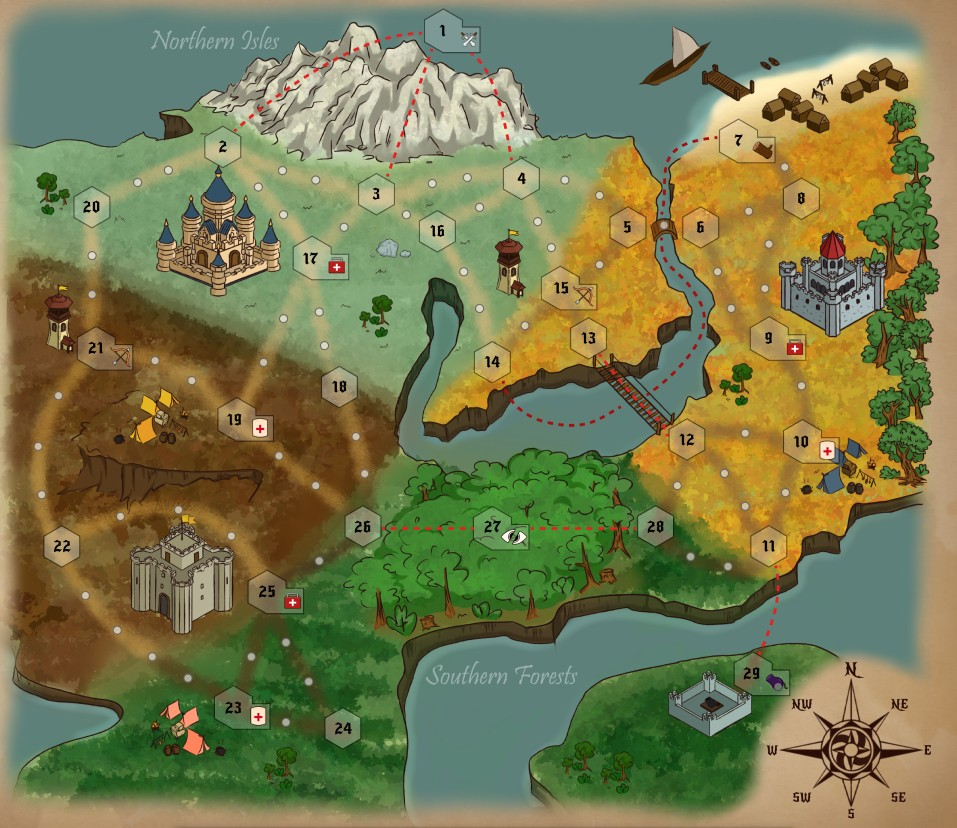

Solo hex strategy. Eight turns to drop the assassin's HP to zero.
You command a prince and two knights on a numbered hex map. Pick one of four strongholds; that pick also sets where the assassin starts. Lose the party or miss eight turns, and it is over. The eight turns are a rite of passage that will not wait. The assassin peeling land as he walks is the kingdom slipping. Painting the map is fuel. The win is the kill.
I was Design Lead. Every board mechanic is mine — formations, movement logic and assassin pathing, combat, locations, zone effects, event cards, AP, and supplies. Same seat as Acquit: gameplay systems first. I wrote the design statement and shot the demo. Art was team. Rulebook and print-and-play layout I helped with.
The line on the design statement is the brief: medieval problems require management solutions. A succession fight and a time-loop assassin are ancient story machinery. The player's tools — action points as time, supplies as a three-way sink, formations as placement — are modern resource problems wearing a crown.
That split keeps the fantasy from becoming a scripted boss fight. If the assassin is a set-piece with phases, the map is scenery you cross on the way to the cutscene. If he is a pathing problem that peels your economy as he walks, every hex you paint is both fuel and a shorter path for him to take. Conquest is interesting when painting the map and hunting the killer are the same job under a closing clock.
Each turn opens with an event card that changes the whole board. Then three phases — morning, evening, night — with 10 AP each, tracked on a D20. Traversing a territory costs 1 AP. You spend that pool to move and to conquer; held land is how supplies arrive.
Splitting the day into three budgets rather than one thirty-point pool matters. A single pool lets you bank the morning for a night march; three locked budgets force routing decisions inside each window, which is closer to medieval travel than to a video-game stamina bar. Night is also when the assassin moves faster, so the last ten points of the day are the most expensive ones you spend.
Supplies spend between turns, three ways. You cannot fund all three well.
| Spend | Buys | If you starve it |
|---|---|---|
| Heal | Survive the next intercept | You never live long enough to use the build |
| Level knights | Combat power on the figures you have | Formations arrive on a soft retinue |
| Unlock formations | Positional combat tools | Levels arrive with no shape to fight in |
Levelling and formations are how the retinue gets strong enough to kill. Healing is how you live long enough to use them. The three-way sink is the same design move as Overseas's shared gold pool: an upgrade that does not compete with survival is not a decision.
He is a pathing problem, not a scripted boss. Shortest path to the prince, skip small nodes, faster at night. Land he walks through becomes unconquered — your economy peels off the map because he travelled.
In a fight he picks from three reactive moves based on how many of you are in the hex. That keeps combat from being a fixed script: the right formation depends on whether you intercepted alone or as a full party, which is a placement problem you solved turns earlier, not a card you flip in the moment.
| Tool | What it does | Job on the clock |
|---|---|---|
| Forests | A whole phase to enter or leave | Buy a full AP budget of distance |
| Mortars | Once-per-turn map-wide attack, if held | Damage without intercepting |
| Watchtowers | Mortar rules, region only | Local pressure after you commit to a stronghold |
| Formations / levels | Combat layer once you meet | Convert supplies into a kill |
Terrain taxes his clock versus yours. Formations and knight levels are what you bring when the paths finally cross.
Four strongholds. The opening pick also sets where the assassin starts. That couples your economy plan to his opening vector: choosing a stronghold for its land is also choosing how soon the peel begins. There is no neutral spawn. The first decision on the board is already a positioning problem.
Early tables felt slow and opaque. Players spent the eight-turn clock deciphering the board instead of hunting on it. Outsiders who had not lived inside the design needed a teammate to translate the rulebook mid-game. That is the wrong kind of difficulty for a solo hex hunt.
What I changed, and why:
The eight turns stayed. The day structure stayed. What left was the friction that was not teaching the hunt.
Rulebook
Print and play
Design statement
Also physical Acquit — solo courtroom cards, same Design Lead seat, different pressure: a file and a jury instead of a clock and a hunter.
Questions soniclinxin@gmail.com · LinkedIn